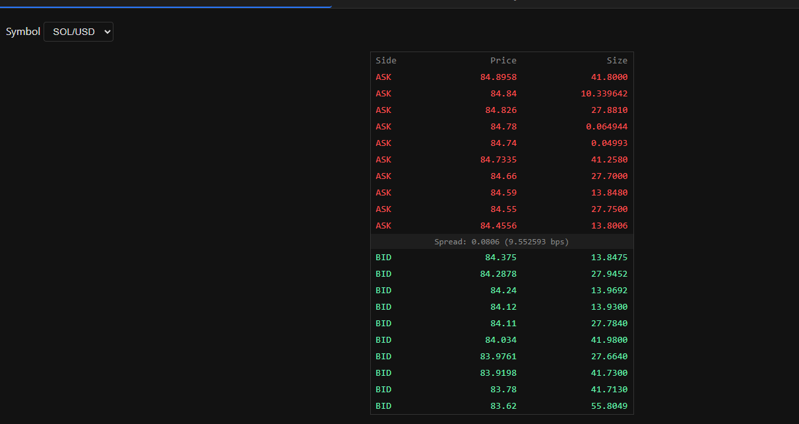
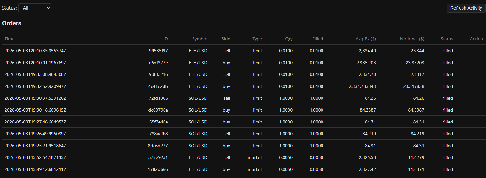
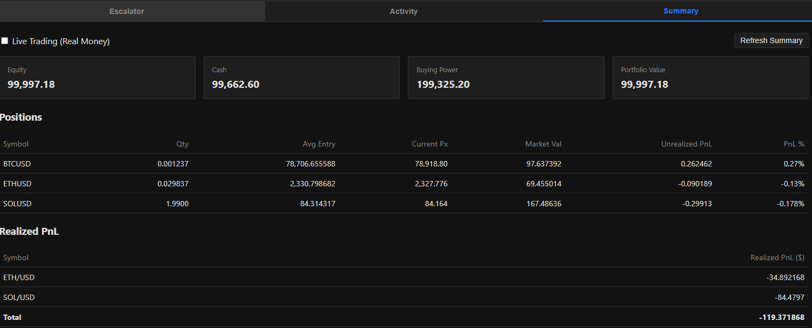

AG2 / autogen Gemini via OpenRouter Alpaca crypto Redis SQLite Flask
alpaca_codegen.py
generated/
The runtime is itself a reproducible LLM artifact. Bugs can be fixed as direct edits (fast) or as prompt edits + regen (durable).
[Codegen layer] [Runtime / generated/]
┌─────────────────────┐ ┌─────────────────────────────┐
│ Researcher ──┐ │ │ subscriber.py trader.py │
│ ▼ │ ── emits ──▶ │ cli.py webgui.py │
│ Coder ◀── Verifier│ │ trade_stream.py persister │
└─────────────────────┘ └─────────────────────────────┘
Alpaca crypto WS ──▶ subscriber ──▶ Redis ──▶ cli / webgui (read)
Alpaca trading WS ──▶ trade_stream ─▶ Redis Stream ──▶ persister ─▶ SQLite
cli / webgui ─── REST ───▶ trader ───▶ Alpaca trading REST (write)
Each long-running worker is independent — any can crash and restart. Redis is the shared substrate; the Stream + consumer-group is what makes persister safe to resume.
| Agent | AG2 class | Role |
|---|---|---|
| Researcher | AssistantAgent |
Writes RESEARCH.md — Alpaca crypto WS + REST brief. Run once, cached; --force-research to refresh. |
| Coder | AssistantAgent |
Per stage, emits the full source of one target file in one fenced block. Sees the brief + earlier-stage files. |
| Verifier | UserProxyAgent + LocalCommandLineCodeExecutor |
Python: py_compile + import in temp dir. HTML: sanity check. Errors loop back to Coder, up to 5 attempts. |
No GroupChat. Orchestration is manual in run_stage() —
each Coder turn is a single-turn initiate_chat(... max_turns=1); the
Verifier runs synchronously and feeds errors back as the next message.
| # | Stage | Target | Lang | Priors (read-only context) |
|---|---|---|---|---|
| 0 | subscriber | subscriber.py | python | — |
| 1 | trader | trader.py | python | — |
| 2 | cli | cli.py | python | subscriber, trader |
| 3 | trade_stream | trade_stream.py | python | trader |
| 4 | persister | persister.py | python | trade_stream |
| 5 | webgui_html | web/index.html | html | — |
| 6 | webgui | webgui.py | python | subscriber, trader, persister, web/index.html |
HTML was split out — emitting Flask backend + ~500-line HTML/CSS/JS in one response was hitting the 32k output-token boundary. Splitting halved the per-stage burden.
python alpaca_codegen.py # generate any missing files
python alpaca_codegen.py --stage all # regenerate everything
python alpaca_codegen.py --stage subscriber # one stage
python alpaca_codegen.py --stage trader BTC/USD ETH/USD # custom symbols
python alpaca_codegen.py --force-research # also redo RESEARCH.md
python alpaca_codegen.py --fix err.txt --stage cli # feed traceback back
Default mode is missing — only stages whose target is absent.
On final retry failure, the last attempt is still written to disk for inspection.
Model: Gemini via OpenRouter (default google/gemini-3.1-pro-preview,
override with GEMINI_MODEL).
When a runtime bug recurs after a regen, the right fix is to add a rule to the
CODER_PREAMBLE "Durable rules" block — not to keep patching the generated file.
CryptoDataStream.run() is sync — never await it; use await stream._run_forever() from inside asyncio.run(main()).CryptoExchange enum — exchange fields are plain strings.HSET rejects None — filter via a _clean() helper.size>0 upsert, size==0 delete).TimeInForce.GTC or IOC — DAY is rejected.
subscriber.py → CryptoDataStream → trades, quotes, L2 orderbook.
Writes Redis: alpaca:latest:<SYM>, alpaca:recent:<SYM>:trade|quote,
alpaca:ob:bids|asks:<SYM>, alpaca:symbols.
cli.py and webgui.py read Redis only — no Alpaca call on the read path.
trader.py — sync wrapper over TradingClient (REST), shared by CLI + webgui.
trade_stream.py → TradingStream WS → XADD alpaca:trade_updates →
persister.py drains via consumer group → SQLite.
The split is the point: persister can crash and resume from the last acked id without losing events.
| Key / Stream | Type | Writer | Reader |
|---|---|---|---|
alpaca:latest:<SYM> | Hash | subscriber | cli latest, webgui fallback |
alpaca:recent:<SYM>:trade | List | subscriber | cli recent |
alpaca:recent:<SYM>:quote | List | subscriber | cli recent |
alpaca:orderbook:<SYM> | Hash | subscriber | webgui (metadata only) |
alpaca:ob:bids:<SYM> | Hash | subscriber | webgui /api/orderbook |
alpaca:ob:asks:<SYM> | Hash | subscriber | webgui /api/orderbook |
alpaca:symbols | Set | subscriber | cli symbols, webgui |
alpaca:trade_updates | Stream | trade_stream | persister |
Orderbook is delta-merged: size>0 upserts, size==0 deletes.
Webgui sorts and slices to top-10 per side at read time.
10 ask rows above 10 bid rows · click a row → pre-filled order modal

Recent orders + fills from SQLite (with $ notional)

Account snapshot, positions, realized PnL by symbol

User clicks ASK row at price P (Escalator)
│
▼
Modal: side=BUY, type=limit, limit_price=P
│ POST /api/order { sym, buy, limit, P, qty, live:false }
▼
webgui.py ──▶ trader.buy_limit(...) ──▶ Alpaca REST (paper=true)
│ │
│ │ (independent path)
│ ▼
│ Alpaca WS ──▶ trade_stream.py
│ │ XADD
│ ▼
│ alpaca:trade_updates
│ │ XREADGROUP
│ ▼
│ persister.py
│ │
│ ▼
│ SQLite: trade_events,
│ orders (UPSERT),
│ fills (INSERT OR IGNORE)
▼
Activity tab later ◀── /api/orders, /api/fills ◀── webgui ◀── SQLite
live=True / --live is the only opt-in. CLI prints a stderr warning.main() / get_client(). This is what lets the verifier import each module without creds.[]/{}; missing SQLite → []; missing creds → null/empty.GTC or IOC only; never DAY. Use qty=, not notional=.pip install -r requirements.txt
export ALPACA_API_KEY_ID=... ALPACA_API_SECRET_KEY=...
docker run -p 6379:6379 redis
python generated/subscriber.py # market data -> Redis
python generated/trade_stream.py # trade events -> Redis Stream
python generated/persister.py # Redis Stream -> SQLite
python generated/webgui.py # http://127.0.0.1:5000
# CLI alternative
cd generated
python cli.py symbols
python cli.py latest BTC/USD
python cli.py account
python cli.py buy BTC/USD 0.001 # paper by default; --live to opt in
README.md · DESIGN.md · CLAUDE.md
github.com — TradingWithAlpaca